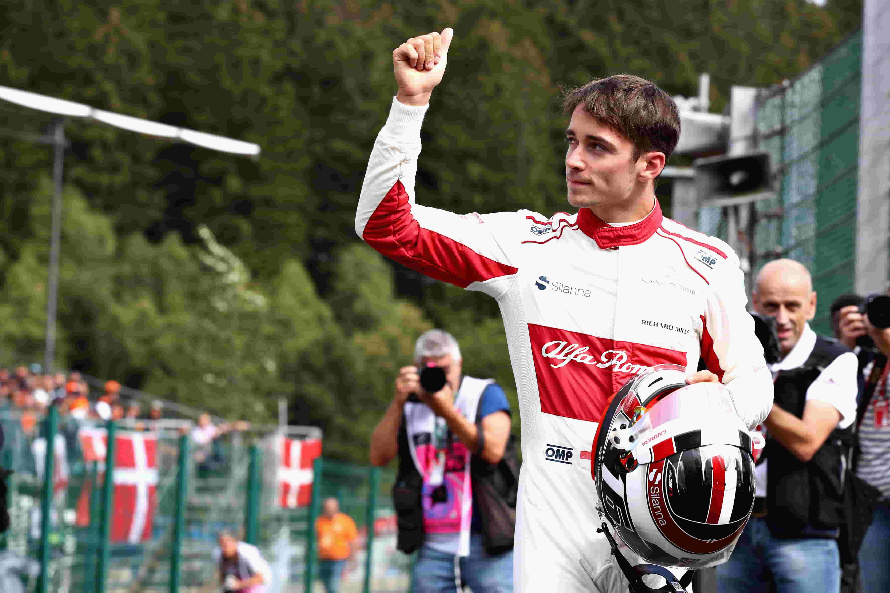
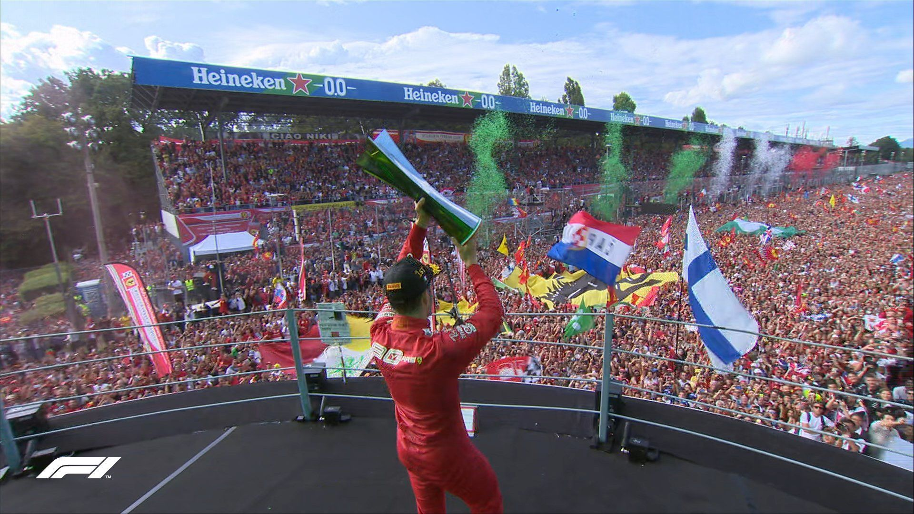

.png)
Charles Leclerc – IL PREDESTINATO
Charles Leclerc, nato a Monte Carlo nel 1997, è uno dei piloti più promettenti della Formula 1. Dopo una brillante carriera nelle categorie giovanili, ha conquistato il cuore dei tifosi Ferrari per la sua velocità pura, la passione e il forte legame emotivo con la Scuderia.
Gli Inizi e l'Esordio in Formula 1
Leclerc ha dominato in GP3 e Formula 2, vincendo il campionato F2 nel 2017. Nel 2018 debutta in F1 con Alfa Romeo Sauber, dimostrando subito talento e maturità. Nel 2019, approda alla Ferrari, diventando il pilota più giovane nella storia moderna del team italiano.
La Prima Vittoria e la Sfida in Rosso
Le sue prime vittorie arrivano nel 2019, in Belgio e nell’indimenticabile GP di Monza. Leclerc diventa un simbolo della rinascita Ferrari, affrontando stagioni difficili ma mostrando sempre tenacia e classe in pista.
2022 e oltre – La Lotta per il Titolo

Nel 2022, Leclerc torna competitivo con la Ferrari, vincendo in Bahrain e Australia. Nonostante difficoltà tecniche e strategie sbagliate, resta in lotta per il mondiale. È considerato uno dei futuri campioni della F1.
I Caschi Iconici di Charles Leclerc

Casco della prima vittoria (Spa 2019)
Edizione speciale GP Monaco 2021
Casco 2023 – Tema tricolore Ferrari